Tratamientos
Conoce nuestros tratamientos y encuentra el ideal para la salud, la función y la estética de tu sonrisa.
Tratamientos diseñados para transformar tu sonrisa
Conoce nuestras especialidades y encuentra el tratamiento ideal para mejorar la salud, función y estética de tu sonrisa.
Agenda tu valoración →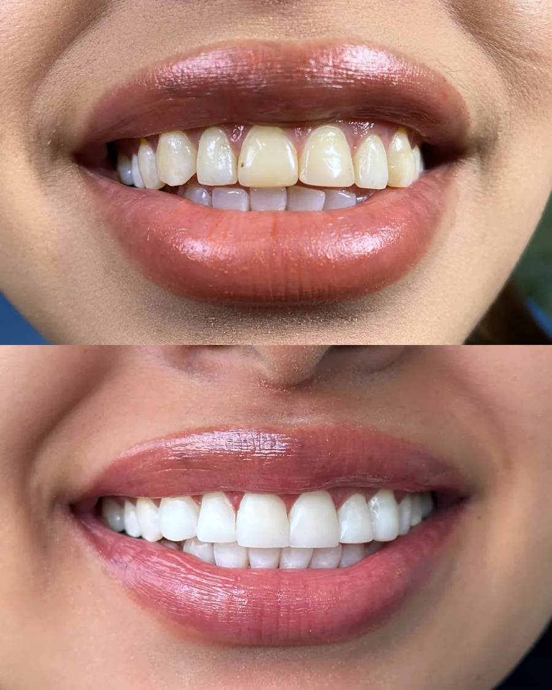
Elige el tratamiento ideal para ti
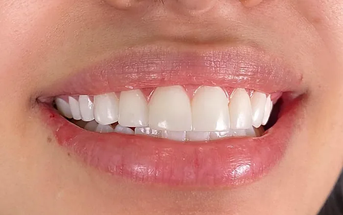
Odontología general y estética
Diseño de sonrisa, carillas y blanqueamiento.
Conocer más →
¿Qué es un Diseño de Sonrisa?
El Diseño de Sonrisa es un tratamiento odontológico que busca lograr una armonía perfecta entre tus dientes, tu rostro y tu personalidad. Consiste en mejorar el tamaño, la forma y el color de los dientes para crear una sonrisa natural, estética y personalizada.
Cada sonrisa es única. Por eso, antes de iniciar cualquier tratamiento, realizamos un análisis detallado de las características faciales, los rasgos y las expectativas de cada paciente. Esto nos permite diseñar resultados que se integren de manera equilibrada con su apariencia, evitando sonrisas artificiales o poco compatibles con su imagen.
La odontología moderna no busca crear sonrisas idénticas, sino resaltar la belleza natural de cada persona mediante resultados altamente armónicos, funcionales y visualmente agradables.
Nuestro objetivo es que tu nueva sonrisa refleje confianza, autenticidad y naturalidad.
Tipos de Diseño de Sonrisa
Ofrecemos diferentes alternativas de Diseño de Sonrisa, adaptadas a las necesidades de cada paciente.
1. Diseño de Sonrisa con Carillas Dentales
Las carillas dentales son uno de los tratamientos estéticos más avanzados y solicitados para mejorar la apariencia de la sonrisa de forma rápida, segura y natural.
Consisten en finas láminas de alta calidad que se adhieren a la superficie de los dientes para corregir imperfecciones como manchas, fracturas, diastemas, desgaste o irregularidades en su forma.
Gracias a su diseño personalizado, las carillas permiten lograr una sonrisa armónica, elegante y adaptada a las características faciales de cada paciente.
Beneficios de las Carillas Dentales
- Resistencia a manchas y desgaste.
- Procedimiento conservador con mínima intervención dental.
- Proporcionan resultados inmediatos y altamente estéticos.
2. Diseño de Sonrisa sin Tallado (Microdiseño)
El Microdiseño de Sonrisa es un procedimiento de odontología estética mínimamente invasivo que busca mejorar la apariencia de los dientes mediante la adición de finas capas de resina de alta estética.
Beneficios del Microdiseño de Sonrisa
- No requiere tallado dental.
- Conserva el esmalte natural de los dientes.
- Permite realizar ajustes y retoques cuando sea necesario.
- Repara pequeñas fracturas o desgastes en los bordes incisales.
3. Diseño de Sonrisa con Ortodoncia Estética
La ortodoncia estética es una excelente opción para corregir problemas de alineación, espacios o malposición dental. Puede realizarse con brackets cerámicos o alineadores transparentes para lograr una sonrisa armónica y funcional.
Beneficios de la Ortodoncia Estética
- Versatilidad según el estilo de vida, permitiendo elegir la opción que mejor se adapte a la rutina diaria.
- Preserva totalmente la estructura dental, a diferencia de otros tratamientos.
- Ofrece resultados más naturales sin alterar la integridad de los dientes.
- Previene el desgaste prematuro, ya que al alinear las piezas dentales distribuye de forma equilibrada las fuerzas de masticación.
¿Qué es el blanqueamiento dental?
El blanqueamiento dental es un tratamiento que elimina las manchas internas del diente, ubicadas debajo del esmalte. Estas manchas pueden aparecer con el paso del tiempo por el consumo de café, vino tinto, bebidas oscuras, cigarrillo y alimentos con colorantes o pigmentos naturales como remolacha, zanahoria y papaya.
¿Es seguro?
Sí. Cuando es realizado por un odontólogo, el blanqueamiento dental es un procedimiento seguro, ya que el especialista controla todo el proceso y protege los dientes y las encías. En cambio, los productos de venta libre o "caseros" pueden ser ineficaces e incluso aumentar el riesgo de sensibilidad o lesiones por un uso inadecuado.
¿Produce sensibilidad?
Es posible presentar una sensibilidad temporal durante o después del tratamiento. Sin embargo, los materiales actuales son más suaves y existen productos específicos para reducir esta molestia. Además, la saliva ayuda a remineralizar el esmalte, por lo que la sensibilidad suele desaparecer sin causar daño cuando el procedimiento se realiza correctamente.
¿Cómo funciona?
El blanqueamiento utiliza agentes como el peróxido de hidrógeno o de carbamida, que penetran el esmalte y descomponen las moléculas responsables de las manchas, logrando dientes con un tono más claro, uniforme y natural.
Alternativas de blanqueamiento dental
Blanqueamiento Dental con Férulas a Medida
Nuestro sistema de blanqueamiento con férulas personalizadas te permite aclarar tus dientes de forma segura desde la comodidad de tu hogar.
A diferencia de los productos comerciales, en nuestra clínica creamos moldes precisos que se adaptan perfectamente a tus dientes. Esto asegura que el gel actúe solo donde se necesita, protegiendo tus encías y logrando un tono más blanco y uniforme, bajo nuestro seguimiento profesional.
Duración del tratamiento
- De 15 días a un mes, usándolo día a día en las noches, 4 horas diarias.
Duración de los resultados
Puede durar hasta 6 años, dependiendo de factores como los hábitos, la edad, el color inicial, la composición del diente y la cantidad de esmalte.
Blanqueamiento Dental con Tecnología LED (Clínico)
Este blanqueamiento es ideal para pacientes que buscan resultados inmediatos, desean el blanqueamiento en una sola sesión o tienen un evento próximo.
¿Cómo funciona?
Se realiza íntegramente en el consultorio. Aplicamos un gel de blanqueamiento de alta potencia que se activa mediante una luz LED fría. Esta luz acelera la liberación de oxígeno del gel, permitiendo que penetre en el esmalte y elimine las manchas profundas en tiempo récord.
Duración del tratamiento
- Dos sesiones de tratamiento en cada cita, de 1 hora.
- Puede requerir de una a cuatro sesiones, según el color inicial.
Duración de los resultados
- Los resultados tienden a revertirse un poco al año.
- Requiere retoques, pero en condiciones ideales puede durar aproximadamente dos años.
Blanqueamiento Dental Mixto (Férulas + Blanqueamiento LED)
El blanqueamiento dental combinado es el tratamiento más recomendado por nuestra clínica, ya que integra los beneficios del blanqueamiento realizado en consultorio con el tratamiento domiciliario. Esta combinación permite obtener un tono más uniforme y natural, al tiempo que optimiza la duración de los resultados.
Es nuestro tratamiento Premium, diseñado para quienes buscan la máxima eficacia sin comprometer la salud dental.
Beneficios
- Resultados más duraderos a lo largo del tiempo.
- Sensibilidad mínima.
- Se pueden controlar los resultados día a día hasta obtener el tono deseado.
Duración del tratamiento
- De 15 días a un mes, usándolo día a día en las noches, 4 horas diarias.
Duración de los resultados
Puede durar hasta 10 años, dependiendo de factores como los hábitos, la edad, el color inicial, la composición del diente y la cantidad de esmalte.
Ortodoncia Damon, brackets y alineadores invisibles. Conocer más →
Corregimos la posición de los dientes y la mordida con distintos sistemas, según tu caso y tu estilo de vida.
Técnicas avanzadas de ortodoncia
Tecnología Damon: Ortodoncia de Autoligado (Baja Fricción)
Olvida los elásticos tradicionales. El sistema Damon utiliza una tecnología de autoligado que redefine la experiencia de tu tratamiento. En lugar de usar ligas que ejercen presión intermitente, estos brackets cuentan con una tapa de alta precisión que permite que el arco se deslice libremente.
Confort superior
Al eliminar los elásticos, reducimos la fricción y la presión excesiva. Esto se traduce en un movimiento dental mucho más suave, constante y, sobre todo, menos doloroso.
Diseño ergonómico
Son brackets más pequeños y redondeados, diseñados específicamente para ser amables con tus mejillas y encías, evitando las molestias típicas de los brackets convencionales.
Activación térmica
Utilizamos arcos de alta tecnología que reaccionan a la temperatura de tu boca. Esta activación suave y continua permite que tus dientes se desplacen con mayor eficiencia, logrando resultados impactantes de manera más rápida y predecible.
Brackets Estéticos (Cerámica o Zafiro)
Diseñados para quienes buscan la máxima discreción, nuestros brackets estéticos están fabricados en materiales de alta tecnología que se mimetizan con el tono natural de tus dientes. Son la opción ideal para adultos y jóvenes que desean mantener una imagen profesional y segura durante todo su tratamiento.
Aunque representan una inversión superior a los brackets metálicos, ofrecen una experiencia superior en estética sin comprometer la precisión ni la eficacia de los resultados. En nuestra consulta, personalizamos tu tratamiento para que tu proceso hacia la sonrisa que sueñas sea cómodo, discreto y, sobre todo, altamente efectivo.
Brackets Metálicos Convencionales
Los brackets metálicos tradicionales continúan siendo la opción más utilizada en ortodoncia gracias a su alta eficacia y accesibilidad. Están indicados para tratar una amplia variedad de casos, desde apiñamientos severos hasta alteraciones complejas de la mordida.
Aunque son más visibles que otras alternativas, los diseños actuales son más pequeños, cómodos y estéticamente más discretos. Representan una excelente relación entre calidad y costo, especialmente cuando el tratamiento se acompaña de una atención profesional personalizada y un seguimiento constante.
Alineadores Invisibles – Invisalign
Los alineadores transparentes representan la alternativa más estética y cómoda para corregir la posición dental sin necesidad de utilizar brackets fijos.
Su diseño removible permite mantener una adecuada higiene oral y disfrutar de una alimentación sin restricciones. Además, cada alineador es planificado digitalmente para adaptarse con precisión a cada etapa del tratamiento, garantizando comodidad y resultados predecibles.
Aunque requieren un alto compromiso por parte del paciente (deben utilizarse al menos 22 horas al día), su discreción y practicidad los han convertido en la opción preferida por muchos adolescentes y adultos.
Cada vez más ortodoncistas certificados ofrecen este tipo de tratamiento, incluyendo sistemas similares a Invisalign, con excelentes resultados y alternativas más accesibles.
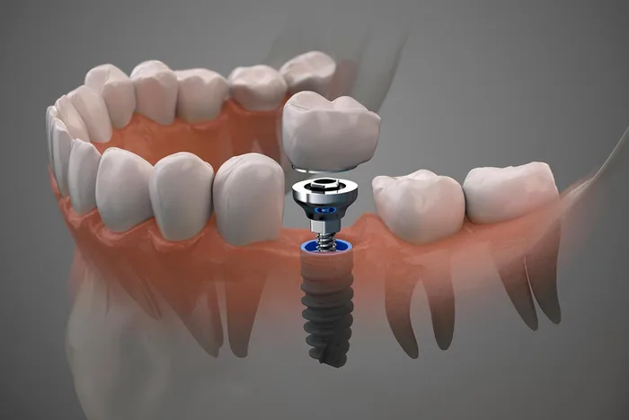
Implantes dentales
Recupera la función y estética de tu sonrisa.
Conocer más →
Los implantes dentales son la mejor alternativa para reemplazar dientes perdidos de manera fija, funcional y estética. Permiten recuperar la capacidad de masticar, hablar y sonreír con total confianza, preservando además el hueso y la estructura facial.
Beneficios
- Apariencia natural
- Recuperan la función masticatoria
- Evitan la pérdida ósea
- Alta durabilidad
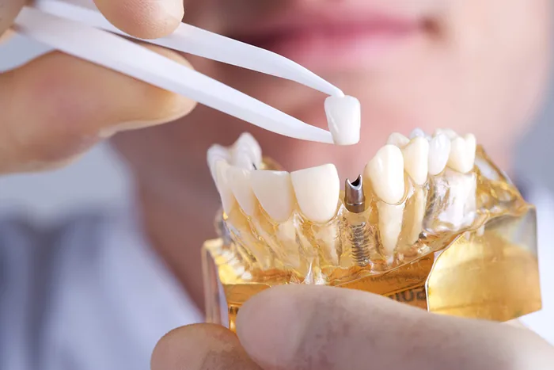
Rehabilitación oral
Devuelve forma y función a tu boca.
Conocer más →
Recuperamos la función y estética de tu sonrisa mediante tratamientos personalizados que restauran dientes desgastados, fracturados o perdidos.
Nuestro objetivo es devolver el equilibrio, la comodidad y la confianza al sonreír.
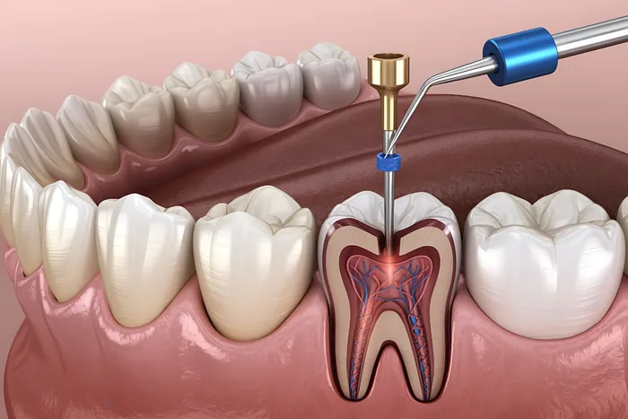
Endodoncia
Tratamientos de conducto sin dolor.
Conocer más →
La endodoncia permite tratar infecciones profundas dentro del diente, eliminando el dolor y conservando la pieza dental siempre que sea posible.
Es un tratamiento seguro que evita, en muchos casos, la extracción del diente.
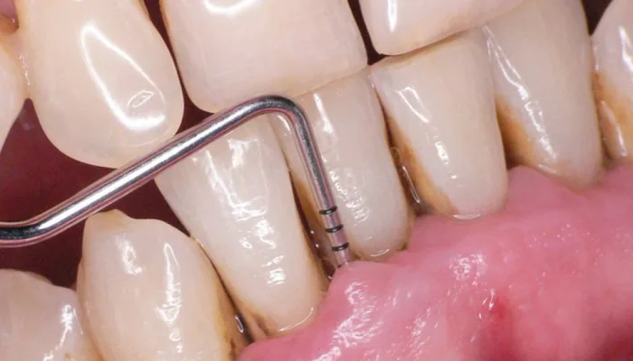
Periodoncia
Salud de encías para una sonrisa fuerte.
Conocer más →
La salud de las encías es fundamental para mantener una sonrisa sana.
La periodoncia previene, diagnostica y trata enfermedades que afectan las encías y el hueso que sostiene los dientes, ayudando a conservarlos a largo plazo.
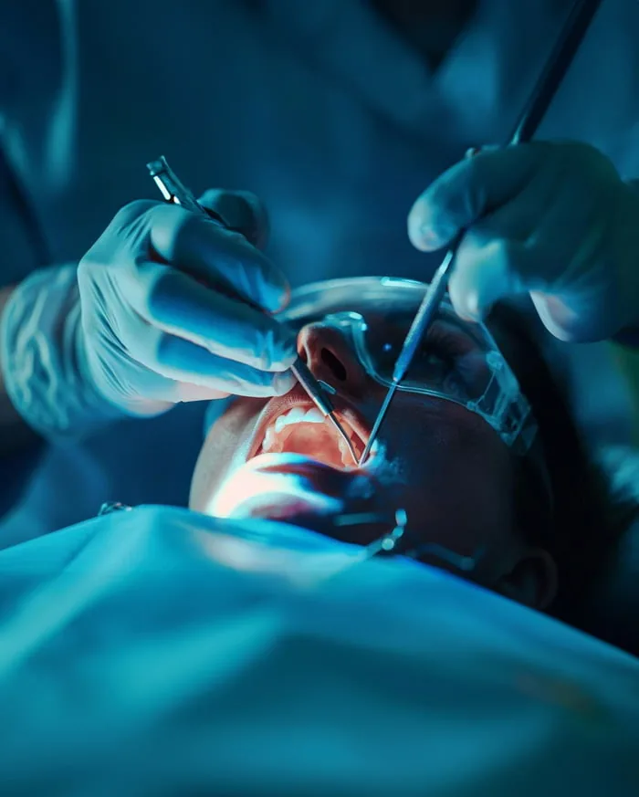
Cirugía oral
Procedimientos quirúrgicos especializados.
Conocer más →
Realizamos procedimientos quirúrgicos enfocados en preservar la salud oral y mejorar la funcionalidad de la boca, utilizando técnicas seguras y un acompañamiento profesional durante todo el proceso.
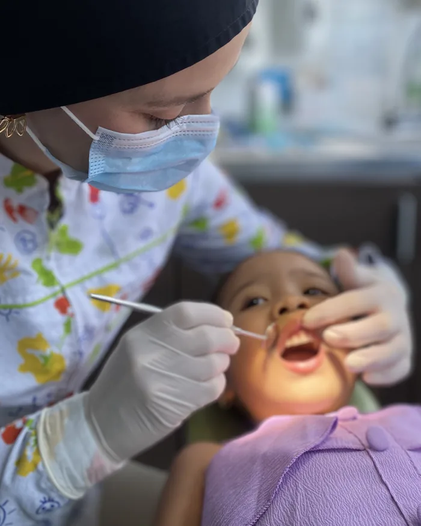
Odontopediatría
Cuidado dental especializado para niños.
Conocer más →
Acompañamos el crecimiento de la sonrisa de los más pequeños mediante atención preventiva y tratamientos especializados para cada etapa de su desarrollo.
Buscamos que cada visita sea una experiencia positiva, fomentando hábitos saludables desde la infancia.
Elige tu tipo de blanqueamiento
Blanqueamiento Dental con Férulas a Medida
- Duración
- 2-3 semanas
- Ideal para
- Resultados graduales
- Beneficios
- Cómodo y progresivo
Ver más →
Nuestro sistema de blanqueamiento con férulas personalizadas te permite aclarar tus dientes de forma segura desde la comodidad de tu hogar.
A diferencia de los productos comerciales, en nuestra clínica creamos moldes precisos que se adaptan perfectamente a tus dientes. Esto asegura que el gel actúe solo donde se necesita, protegiendo tus encías y logrando un tono más blanco y uniforme, bajo nuestro seguimiento profesional.
Duración del tratamiento
- De 15 días a un mes, usándolo día a día en las noches, 4 horas diarias.
Duración de los resultados
Puede durar hasta 6 años, dependiendo de factores como los hábitos, la edad, el color inicial, la composición del diente y la cantidad de esmalte.
Más popular
Blanqueamiento Dental Mixto (Férulas + Blanqueamiento LED)
- Duración
- 2 sesiones
- Ideal para
- Máxima blancura
- Beneficios
- Resultado superior y duradero
Ver más →
El blanqueamiento dental combinado es el tratamiento más recomendado por nuestra clínica, ya que integra los beneficios del blanqueamiento realizado en consultorio con el tratamiento domiciliario. Esta combinación permite obtener un tono más uniforme y natural, al tiempo que optimiza la duración de los resultados.
Es nuestro tratamiento Premium, diseñado para quienes buscan la máxima eficacia sin comprometer la salud dental.
Beneficios
- Resultados más duraderos a lo largo del tiempo.
- Sensibilidad mínima.
- Se pueden controlar los resultados día a día hasta obtener el tono deseado.
Duración del tratamiento
- De 15 días a un mes, usándolo día a día en las noches, 4 horas diarias.
Duración de los resultados
Puede durar hasta 10 años, dependiendo de factores como los hábitos, la edad, el color inicial, la composición del diente y la cantidad de esmalte.
Blanqueamiento Dental con Tecnología LED (Clínico)
- Duración
- 1 sesión, 60 min
- Ideal para
- Resultados rápidos
- Beneficios
- Visible desde la primera cita
Ver más →
Este blanqueamiento es ideal para pacientes que buscan resultados inmediatos, desean el blanqueamiento en una sola sesión o tienen un evento próximo.
¿Cómo funciona?
Se realiza íntegramente en el consultorio. Aplicamos un gel de blanqueamiento de alta potencia que se activa mediante una luz LED fría. Esta luz acelera la liberación de oxígeno del gel, permitiendo que penetre en el esmalte y elimine las manchas profundas en tiempo récord.
Duración del tratamiento
- Dos sesiones de tratamiento en cada cita, de 1 hora.
- Puede requerir de una a cuatro sesiones, según el color inicial.
Duración de los resultados
- Los resultados tienden a revertirse un poco al año.
- Requiere retoques, pero en condiciones ideales puede durar aproximadamente dos años.
Encuentra tu sistema ideal
-
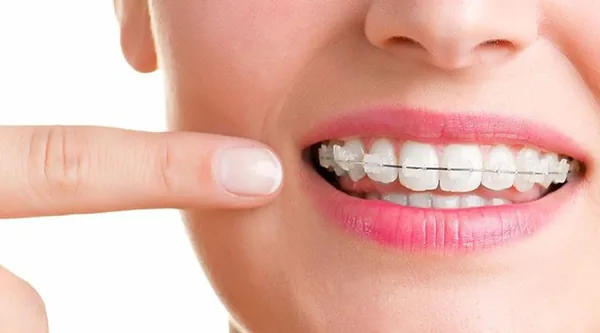
Tecnología Damon- Tiempo
- 12-18 meses
- Ideal para
- Casos complejos
Ver más →
El sistema Damon utiliza una tecnología de autoligado que redefine la experiencia de tu tratamiento. En lugar de usar ligas que ejercen presión intermitente, estos brackets cuentan con una tapa de alta precisión que permite que el arco se deslice libremente.
Confort superior: Al eliminar los elásticos, reducimos la fricción y la presión excesiva, logrando un movimiento dental mucho más suave, constante y menos doloroso.
Diseño ergonómico: Brackets más pequeños y redondeados, amables con tus mejillas y encías.
Activación térmica: Arcos de alta tecnología que reaccionan a la temperatura de tu boca para un desplazamiento más eficiente y predecible.
-
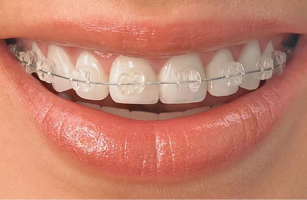
Brackets Estéticos (Cerámica o Zafiro)- Tiempo
- 14-20 meses
- Ideal para
- Discreción
Ver más →
Diseñados para quienes buscan la máxima discreción, nuestros brackets estéticos están fabricados en materiales de alta tecnología que se mimetizan con el tono natural de tus dientes. Son la opción ideal para adultos y jóvenes que desean mantener una imagen profesional y segura durante todo su tratamiento.
Aunque representan una inversión superior a los brackets metálicos, ofrecen una experiencia superior en estética sin comprometer la precisión ni la eficacia de los resultados. En nuestra consulta, personalizamos tu tratamiento para que tu proceso hacia la sonrisa que sueñas sea cómodo, discreto y, sobre todo, altamente efectivo.
-
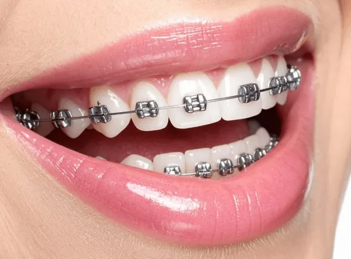
Brackets Metálicos Convencionales- Tiempo
- 12-18 meses
- Ideal para
- Presupuesto
Ver más →
Los brackets metálicos tradicionales continúan siendo la opción más utilizada en ortodoncia gracias a su alta eficacia y accesibilidad. Están indicados para tratar una amplia variedad de casos, desde apiñamientos severos hasta alteraciones complejas de la mordida.
Aunque son más visibles que otras alternativas, los diseños actuales son más pequeños, cómodos y estéticamente más discretos. Representan una excelente relación entre calidad y costo, especialmente cuando el tratamiento se acompaña de una atención profesional personalizada y un seguimiento constante.
-
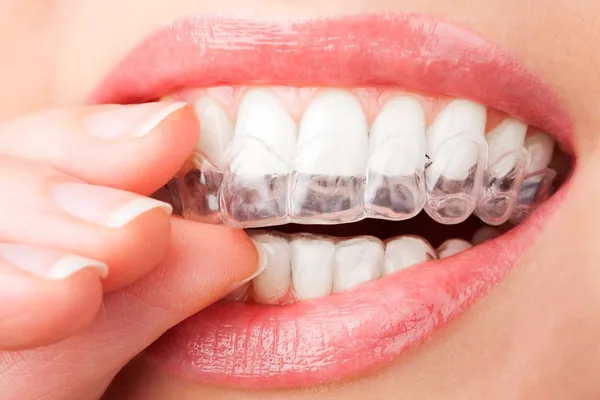
Alineadores Invisibles – Invisalign- Tiempo
- 6-12 meses
- Ideal para
- Vida activa
Ver más →
Los alineadores transparentes representan la alternativa más estética y cómoda para corregir la posición dental sin necesidad de utilizar brackets fijos.
Su diseño removible permite mantener una adecuada higiene oral y disfrutar de una alimentación sin restricciones. Además, cada alineador es planificado digitalmente para adaptarse con precisión a cada etapa del tratamiento, garantizando comodidad y resultados predecibles.
Aunque requieren un alto compromiso por parte del paciente (deben utilizarse al menos 22 horas al día), su discreción y practicidad los han convertido en la opción preferida por muchos adolescentes y adultos.
Cada vez más ortodoncistas certificados ofrecen este tipo de tratamiento, incluyendo sistemas similares a Invisalign, con excelentes resultados y alternativas más accesibles.
Otros tratamientos
Contamos con todas las especialidades odontológicas, lo que nos permite realizar tratamientos integrales con un equipo multidisciplinario, tecnología avanzada y atención coordinada, para brindar una experiencia más cómoda, eficiente y personalizada a cada paciente.
Implantes dentales
Los implantes dentales son la mejor alternativa para reemplazar dientes perdidos de manera fija, funcional y estética.
Permiten recuperar la capacidad de masticar, hablar y sonreír con total confianza, preservando además el hueso y la estructura facial.
Beneficios
- Apariencia natural
- Recuperan la función masticatoria
- Evitan la pérdida ósea
- Alta durabilidad
Rehabilitación oral
Recuperamos la función y estética de tu sonrisa mediante tratamientos personalizados que restauran dientes desgastados, fracturados o perdidos.
Nuestro objetivo es devolver el equilibrio, la comodidad y la confianza al sonreír.
Endodoncia
La endodoncia permite tratar infecciones profundas dentro del diente, eliminando el dolor y conservando la pieza dental siempre que sea posible.
Es un tratamiento seguro que evita, en muchos casos, la extracción del diente.
Periodoncia
La salud de las encías es fundamental para mantener una sonrisa sana.
La periodoncia previene, diagnostica y trata enfermedades que afectan las encías y el hueso que sostiene los dientes, ayudando a conservarlos a largo plazo.
Cirugía oral
Realizamos procedimientos quirúrgicos enfocados en preservar la salud oral y mejorar la funcionalidad de la boca, utilizando técnicas seguras y un acompañamiento profesional durante todo el proceso.
Odontopediatría
Acompañamos el crecimiento de la sonrisa de los más pequeños mediante atención preventiva y tratamientos especializados para cada etapa de su desarrollo.
Buscamos que cada visita sea una experiencia positiva, fomentando hábitos saludables desde la infancia.
¿Listo para cuidar tu sonrisa?
Agenda sin costo tu valoración inicial y te orientamos sobre el tratamiento ideal para ti.
Agenda sin costo tu valoración